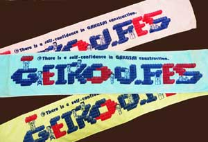
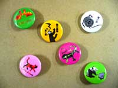
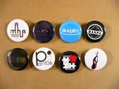

|
当日、インフォメーションテントにて、芸工祭オリジナルグッズを販売します。
商品ラインナップはこちら！！
タオル 1枚400円
(ピンク・ブルー・グリーン)

オリジナルデザインのマフラータオル。
"There is a self-confidence in GAKUSAI construction."
("ガクサイ"建設には自信あり)とプリントされている。
缶バッチ
１個120円 ３個セット300円

ステッカー 1枚50円〜
芸工祭で開催される各イベントのロゴや、学内で公募したデザインの缶バッチとステッカー。
数量少なめなので、お目当てのデザインは早めに買っておこう！
|